Home / Modern Heritage / The Americas: Mesoamerica
Playable heritage gamePinata swing
Also known as Piñata · Piñata (clay pot)
A party skill game: a decorated paper or clay pot hangs from a cord and is kept swinging while a player, eyes covered and turned around a few times, swings a stick at it. Each turn is short, and a clean hit on the middle of the pot is worth the most.
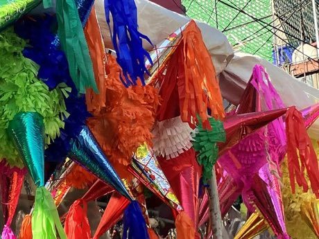

How to play
- Press and hold to wind up the stick; the crosshair wanders because you cannot see well and have been turned around.
- Release when the crosshair sits on the swinging pot; the stick needs a moment to arrive.
- Three swings make a turn, and there are three turns.
Rules at a glance
- A hit on the middle of the pot scores 3, on the body of the pot 2 and on its edge 1; a miss scores nothing.
- The pot swings from side to side and bobs up and down, and every turn starts you facing a slightly different way.
- Stars are given for the total over all nine swings.
About the tradition
Hitting a hanging pot with a stick is a children's party game enjoyed in Mexico, Paraguay and many other countries of the Americas. The pot is made of paper or clay, decorated by hand, and the fun is in the swinging and the guessing.
Origins
Usually placed in the era of Modern Heritage (1800 to today), although its exact origins are uncertain, within the cultural world of The Americas: Mesoamerica.
Credits
- Game design: World Heritage Games (original)
- Photo: Paricutina, CC0, source on Wikimedia Commons
- Text: CC BY-SA 4.0, World Heritage Games.
Sources

Get the app
Pinata swing is coming to the App Store and Google Play. One app, many traditions, no account needed.
Included in Sports & Skill Games of World
More games to play
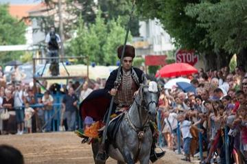
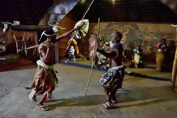
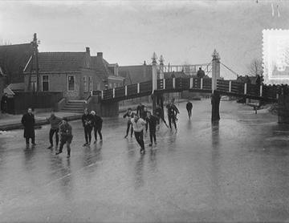
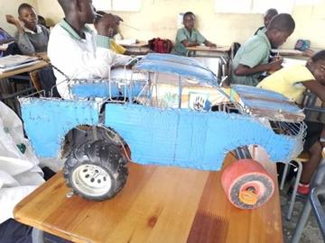
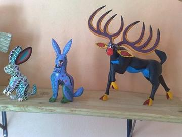
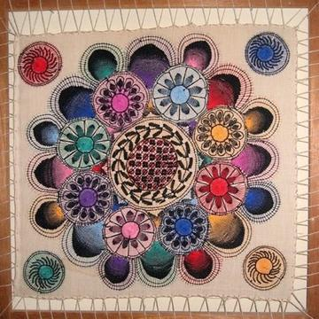
More from Mexico
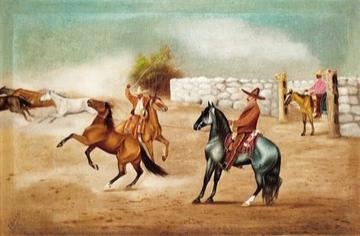
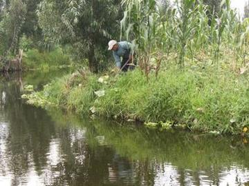
Chinampa Gardens
Mexico · Crafts and making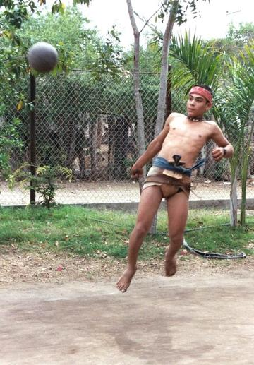
Mesoamerican ballgame
Guatemala +1 · Street and playground games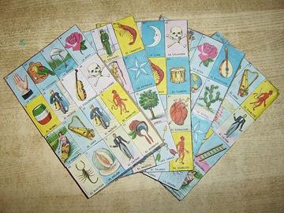
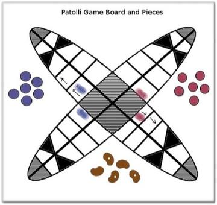
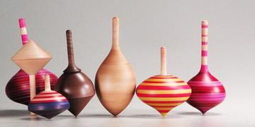